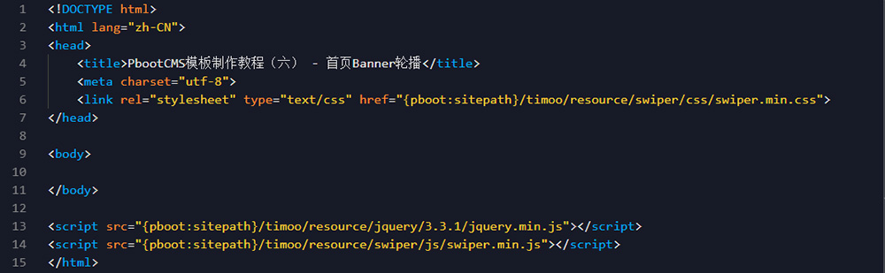
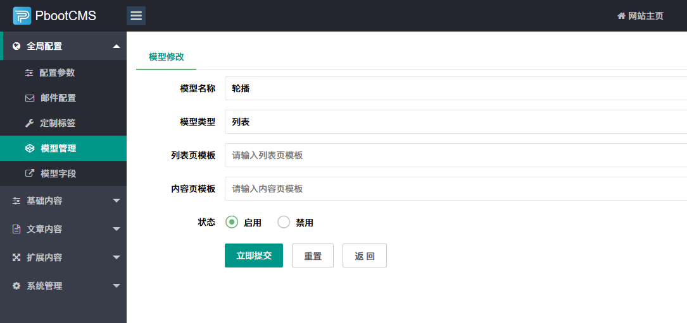
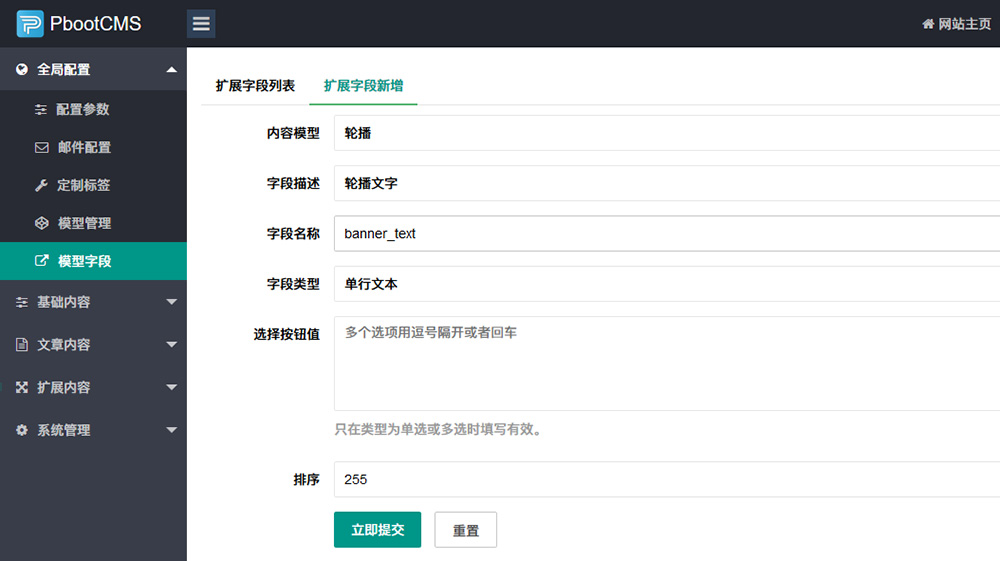
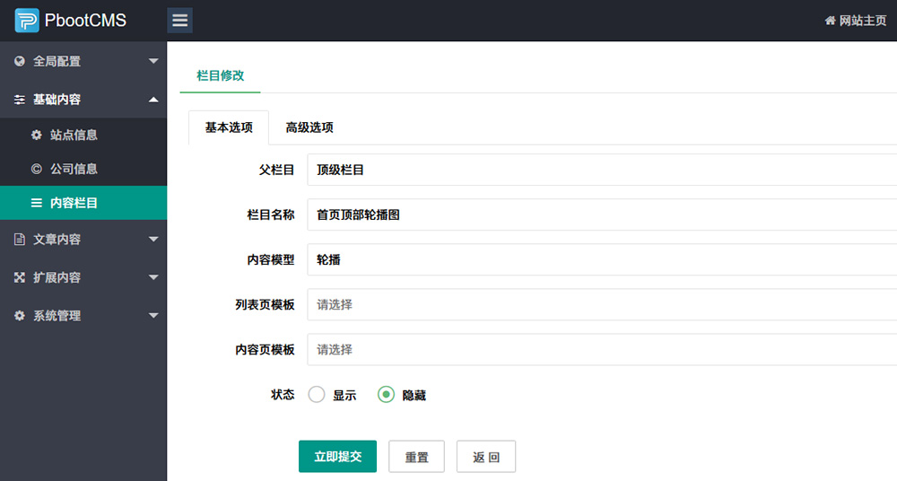
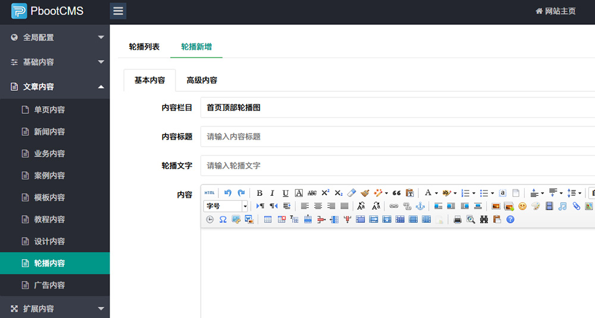

首页的大图轮播，算是网站中的一道“硬菜”了。大图美不美观，直接影响整个网站的格局。
当然，这道“硬菜”的关键部分应该掌握在设计师手中，设计师就是这道菜的厨师，而写模板的只不过是端盘子的而已。
可是，职业不分贵贱，即便大厨烧出了美味的菜肴，服务员端菜的时候往里面加了只苍蝇，顾客也还是会反胃的。
所以，不要小看端盘子的，他也是整个流程中重要的一环。
回到正题，因为是模板制作教程，所以关于图片怎么轮播的部分就不展开讲了。各种素材站有很多炫酷的jQuery轮播插件，可以自行选择。
教程中将以swiper为例，来做一个简单的轮播。
swiper是一个强大的轮播插件，关于具体的一些使用方法，请自行参阅官方文档。
一、先将swiper的文件放置在文件夹中，并引入到模板文件。

二、写HTML结构
<div id="Banner" class="swiper-container"> <!-- 轮播主体 --> <div class="swiper-wrapper"> <div class="swiper-slide"> <a href="#"> <img src="#" alt="#"> </a> </div> </div> <!-- 轮播控件 --> <div class="banner-prev"> <i class="fa fa-angle-left"></i> </div> <div class="banner-next"> <i class="fa fa-angle-right"></i> </div> </div>
三、调用轮播图片
这里有两个思路，使用PbootCMS自带的轮播图片模块或者自建一个轮播模型。
1、使用PbootCMS自带的幻灯片模块
{pboot:slide gid=1 num=3}
<div class="swiper-slide">
<a href="[slide:link]">
<img src="[slide:src]" alt="[slide:title]">
</a>
</div>
{/pboot:slide}很简单，使用{pboot:slide}标签调用即可，其中gid是分组，num是数量。
自带的轮播扩展内置了10个分组，有标题、副标题和链接地址，一般轮播够用了。
2、自建一个轮播模型
这是本篇教程着重要讲解的部分。
关于模型概念的理解，在使用PbootCMS制作模板的时候是非常重要的。
（1）、新建一个轮播模型

输入模型名称，模型类型选择列表，模板留空，提交。轮播模型就建好了，是不是很简单。
（2）、添加模型字段

这里可以自己添加需要在轮播中出现的一些元素，比如覆盖在轮播图片上的文字，点击跳转的链接等等，更高级一些甚至还可以添加一个表示当前轮播图片的动画效果的CSS名称，让不同的轮播图用不同的动画效果出现。（只要开动脑筋，PbootCMS的模型让一切皆有可能）
（3）、添加轮播栏目

添加栏目的理由：
最简单的理由就是添加内容需要选择栏目，不然不能添加。不过，仔细思考一下，一个网站的轮播很有可能不止在首页顶部调用，比如一些侧边栏广告轮播。那么这里的栏目就相当于默认轮播扩展中的分组，不同的是，这里的栏目是可以无限分组的，而且还可以根据栏目名称知道这是显示在哪里的轮播，方便管理。
（4）、接下来就可以添加轮播图了

可以看到，刚才添加的字段“轮播文字”也在这里显示了。
（5）、轮播图调用
关于自建模型中轮播图的调用，参考官网文档：指定列表调用 即可。
四、添加swiper的js部分
<script>
var Banner = new Swiper ('#Banner', {
speed: 1500,
autoplay: {
delay: 5000,
},
loop: true,
//Pagination
pagination: {
el: '.swiper-pagination',
clickable: true,
},
//Navigation
navigation: {
nextEl: '.banner-next',
prevEl: '.banner-prev',
},
})
</script>注意：代码需要在swiper.min.js后面。
完成，剩下的就是CSS样式美化问题了。
总结：轮播图制作的时候主要就是调用思路。使用自带的轮播扩展，可以直接添加调用；使用模型的方式，可以做一些更高级的定义。
上一篇：小程序教程之腾讯地图及导航的使用